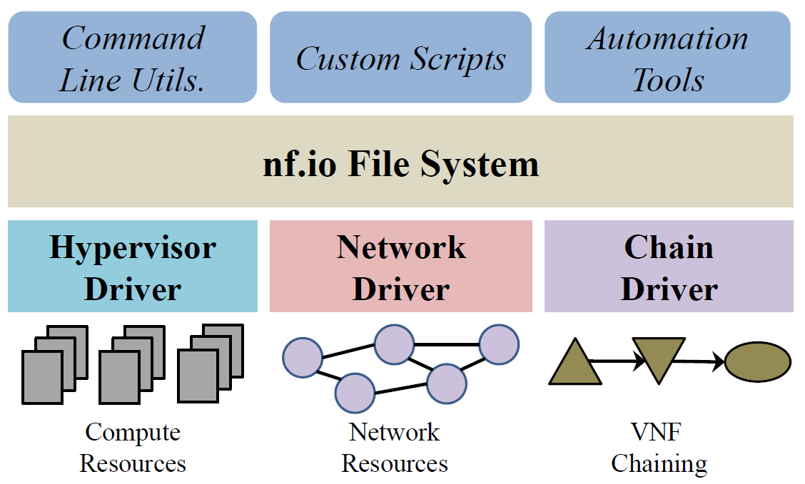

Overview
nf.io provides a file system abstraction for Virtual Network Function (VNF) management and Orchestration. It exposes the Linux file system interface as the northbound API, enabling user to manage and orchestrate VNFs by performing simple file and directory manipulation operations.
Architecture

A high-level view of the nf.io architecture is shown in the above figure. The nf.io File System is a virtual file system layered on top of the OS file system. VNF operations are triggered when a user writes special strings (e.g., 'activate', 'stop', etc.) in action files. nf.io performs these operations by using three resource drivers: (i) Hypervisor Driver, (ii) Network Driver, and (iii) Chain Driver. The hypervisor and network drivers manage the compute and network resources, respectively. The chain driver manages VNF chains by configuring traffic forwarding rules between VNFs.
Publications
- Md. Faizul Bari, Shihabur Rahman Chowdhury, Reaz Ahmed, and Raouf Boutaba, nf.io: A File System Abstraction for NFV Orchestration, IEEE NFV-SDN 2015, San Francisco, USA, 18-21 November, 2015. PDF PPT
- Md. Faizul Bari, Shihabur Rahman Chowdhury, Reaz Ahmed, and Raouf Boutaba, nf.io: A File System Abstraction for NFV Orchestration, ACM SIGCOMM 2015, London, UK, August 17-21, 2015: 361-362. PDF
Source Code
The source code is available at https://github.com/WatNFV/nf.io